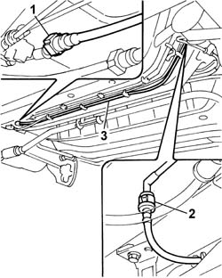
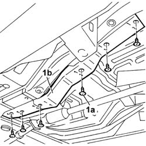
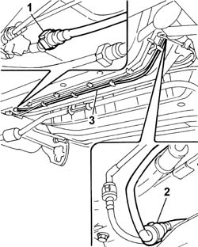
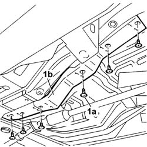
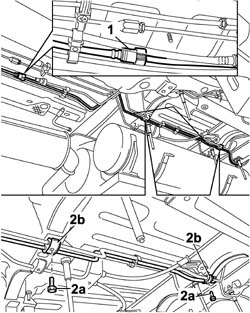
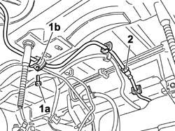

1040B34 intermediate fuel delivery hose r r
- Path
- Procedures > 10 ENGINE > 1040 FUEL TANK AND PIPES > 1040B FUEL SUPPLY/RETURN CIRCUIT PIPE > 1040B34 intermediate fuel delivery hose r r
- Kind
- repair procedure (removal / refitting; the operation number is the code)
- Applies to
- engines: 1.2 8v, 1.4 8v, 1.6 16v, 1.9 JTD 8V, 1.9 DIESEL; all production periods
- Interactive page
- https://sloeber94.github.io/elrnDB-fDbl/en/#/2584230
Applies to: engines: 1.2 8v, 1.4 8v; all production periods
 Removing
Removing
 Refitting
RefittingPlace the car on a ramp.
Disconnect the battery negative terminal.
Raise the vehicle.
1. Undo the fixings (1a) and remove the plastic protection (1b) complete with fuel and anti-evaporation pipes.
Applies to: engines: 1.2 8v, 1.4 8v; all production periods
1. Disconnect the middle section of the fuel pipe from the front section, acting on the rapid connector.
2. Disconnect the middle section of the fuel pipe from the rear section, acting on the rapid connector.
Release the fuel pipe from the springs on the bodyshell.
3. Remove the middle section of the fuel pipe.

Applies to: engines: 1.2 8v, 1.4 8v; all production periods
Refitting
RemovingPosition the middle section of the fuel pipe.
Connect the middle section of the fuel pipe to the front section and to the rear section, acting on the rapid connectors.
Fit the plastic protection for the fuel and anti-evaporation pipes.
Lower the vehicle.
Connect the battery negative terminal.
Remove the vehicle from the ramp.
Applies to: engines: 1.6 16v; all production periods
Removing
RefittingPlace the car on a lift.
Disconnect the battery negative terminal.
Raise the vehicle.
1. Undo the fixings (1a) and remove the plastic protection (1b) omplete with fuel and anti-evaporation pipes.
Applies to: engines: 1.6 16v; all production periods
1. Disconnect the middle section of the fuel pipe from the front section, acting on the rapid connector.
2. Disconnect the middle section of the fuel pipe from the rear section, acting on the rapid connector.
Release the fuel pipe from the springs on the bodyshell.
3. Remove the middle section of the fuel pipe.
Applies to: engines: 1.6 16v; all production periods
Refitting
RemovingPosition the middle section of the fuel pipe.
Connect the middle section of the fuel pipe to the front section and to the rear section, acting on the rapid connectors.
Fit the plastic protection for the fuel and anti-evaporation pipes.
Lower the vehicle.
Connect the battery negative terminal.
Remove the vehicle from the ramp.
Applies to: engines: 1.9 DIESEL; all production periods
Removing
RefittingPlace the car on a ramp.
Disconnect the battery negative terminal.
Raise the vehicle.
1. Undo fastenings (1a) and remove the plastic protection (1b) complete with fuel pipes.

Applies to: engines: 1.9 DIESEL; all production periods
1. Disconnect the middle section of the fuel pipe from the front section, acting on the rapid connector.
2. Disconnect the middle section of the fuel pipe from the rear section, acting on the rapid connector.
Release the fuel pipe from the springs on the bodyshell.
3. Remove the middle section of the fuel pipe.

Applies to: engines: 1.9 DIESEL; all production periods
Refitting
RemovingPosition the middle section of the fuel pipe.
Connect the middle section of the fuel pipe to the front section and to the rear section, acting on the rapid connectors.
Fit the plastic protection for the fuel pipes.
Lower the vehicle.
Connect the battery negative terminal.
Remove the vehicle from the ramp.
Applies to: engines: 1.9 JTD 8V; all production periods
Removing
RefittingPosition the vehicle on the ramp.
1. Undo the fixings (1a) and remove the complete fuel pipes protection (1b).

Applies to: engines: 1.9 JTD 8V; all production periods
1. Disconnect the rapid attachment for the intermediate fuel supply pipe from the front one.
2. Disconnect the rapid attachment for the intermediate fuel supply pipe from the rear one.
3. Remove the intermediate fuel supply pipe after releasing it from the fixings under the bodyshell.
Applies to: engines: 1.9 JTD 8V; all production periods
Refitting
RemovingRefit the intermediate fuel supply pipe in its seating and secure it with the clips under the bodyshell.
Connect the rapid attachment of the intermediate fuel supply pipe to the rear one.
Connect the rapid attachment of the intermediate fuel supply pipe to the front one.
Refit in its seating the fuel pipes protection and secure it.
Remove the car from the ramp.
Applies to: engines: 1.6 16v; all production periods; only with equipment: Cargo trim level and BIPOWER
Removing
RefittingDisconnect the battery negative terminal.
Place the car on a ramp.
Op. 1042E60 CNG CANISTER(S) GUARD/PROTECTION -R.R..
Op. 1042A72 CENTRE CANISTER FOR CNG CANISTER ASSEMBLY - R.R..
Op. 1042A70 LEFT CANISTER FOR CNG CANISTER ASSEMBLY - R.R..
1. Disconnect the front quick connector on the intermediate fuel delivery pipe.
2. Undo the bolts (2a) and remove the brackets retaining the pipes (2b) to the bodywork.

Applies to: engines: 1.6 16v; all production periods; only with equipment: Cargo trim level and BIPOWER
1. Undo the bolts (1a) securing the rear bracket (1b) securing the pipes to the bodywork.
2. Disconnect the rear quick connector and remove the intermediate fuel supply pipe, after releasing it from its retaining clips.

Applies to: engines: 1.6 16v; all production periods; only with equipment: Cargo trim level and BIPOWER
Refitting
RemovingPosition the intermediate fuel supply pipe and secure it to the retaining clips.
Connect the rear quick connector on the pipe.
Position the rear pipe retaining bracket and bolt it to the bodywork.
Position the front and central pipe retaining brackets and secure them to the bodywork by means of the bolts.
Connect the front quick connector of the intermediate fuel supply pipe.
Op. 1042A70 LEFT CANISTER FOR CNG CANISTER ASSEMBLY - R.R..
Op. 1042A72 CENTRE CANISTER FOR CNG CANISTER ASSEMBLY - R.R..
Op. 1042E60 CNG CANISTER(S) GUARD/PROTECTION -R.R..
Remove the vehicle from the lift.
Connect the battery negative terminal.
Topics linked from this page (3)
- 1042A70 Left CANISTER for CNG CANISTER ASSEMBLY - R.R.
- 1042A72 Centre CANISTER for CNG CANISTER ASSEMBLY - R.R.
- 1042E60 CNG CANISTER ASSEMBLY SHIELD/PROTECTION / - R.R.